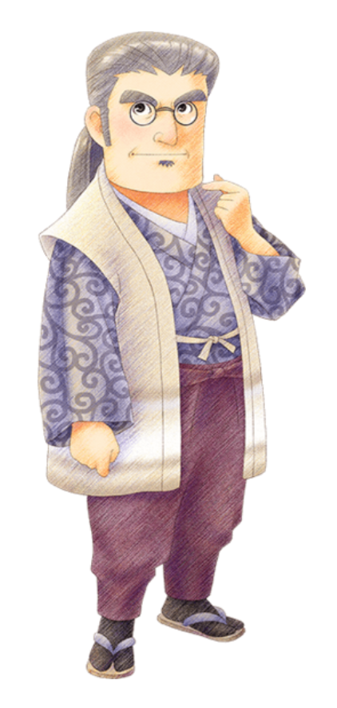
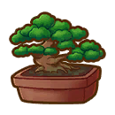
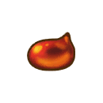

Doesetsu



"El fiel y leal servidor de Iori. Ha servido a su amo durante muchos años. Un modelo de artes marciales y creativas. Una vez probó un plato con puerros en sus viajes y fue amor a primera vista".
Dosetsu es un personaje de Story of Seasons: Pioneers of Olive Town.
Dosetsu es el fiel y leal sirviente de Iori. Ha servido a su amo durante muchos años. Un modelo de artes marciales y creativas. Una vez probó un plato con puerros en sus viajes y fue amor a primera vista.
También actúa como tutor de Cindy y Mikey y con su ayuda organiza la búsqueda de setas cada año en otoño.
Cumpleaños | 20 de Primavera |
|---|---|
| Familia |
 Maestro |
Horario |
Martes a Domingo | Dosetsu empezará su día en Seishin-an de 06:30 - 07:00, para luego dirigirse a la Playa de 08:45 - 10:30 y finalmente se quedara por el resto del día en Seishin-an llegando a las 13:00. |
|---|---|---|
| Lunes | Dosetsu empezará su día en Seishin-an de 06:30 - 07:00, para luego salir por un rato y luego volver a Seishin-an de 07:30 - 11:45, para luego salir por un rato y luego volver a Seishin-an de 12:00 - 13:00, para luego ir a la Tienda de herramientas de 15:00 - 17:00 y finalmente se quedara por el resto del día en Seishin-an llegando a las 18:00. | |
Cualquier día
   |
Dosetsu estara todo el día en Seishin-an. | |
Nota: Puede conocer mejor sobre los lugares disponibles que hay en el juego y lo puede consultar en la sección de lugares. | ||
Preferencias de regalo
La mejor forma de mejorar la amistad y el afecto con los aldeanos o candidatos a matrimonio es siempre regalarles las cosas que le gusta una vez por día, aqui se mustra los regalos que puedes darle a este personaje.
|
😍
Fasina
|
 Monaka decastañas  Puerrogigante  Onigiri |
|---|---|
|
🙂
Encanta
|
 Pescadohervido  Kenchin-jiru  Kinpiragobo  Kitsuneudon  Puerro  Crisantemo  Pasta depeperoncino  Sopa demarisco  Salsa desoja  Tempura |
|
😐
Gusta
|
 Brote debambú  Vals de lasllamas  Bonsái  Botamochi  Ruibarbo deciénaga  Castaña  Arroz concastañas  Arroz blancoPot au feu  Conciertode la tierra  Pantallaoriental  Pulsera ala moda  Pescado ala plancha  Cola decaballo  Caldo  Medallónenjoyado  Anilloenjoyado  Caldo dekimchi  Arroz conhongo pino  Arroz consetas  Nocturno deluz de luna  Daifuku deartemisa  Sopa dequingombó  Oshiruko  Lamparade papel  Ramoarcoíris  Arroz  Helechoreal  Savia  Relojbrillante  Marcha deprimavera  Daifukude fresa  Hojasde té  Rondó floresde invierno |
| Nota: Todos los regalos que no estan aquí son considerados neutrales para el personaje. | |
Eventos del personaje
Cada evento que ocurra el jugador podrá conecer más sobre el personaje, algunos eventos son partes de la historia del juego y otras son eventos extras que puedes hacer.